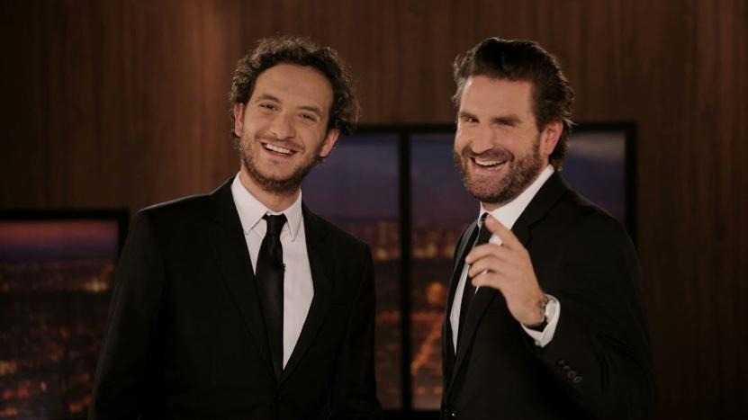

Présentation du collectif
David Marsais, Grégoire Ludig forment en 2002 le Palmashow, un groupe d'humoristes donc l'étymologie découle de l'ancien groupe de rap de Grégoire Ludig (oui, Grégoire a rappé) et de leur passion pour les sketchs. Après avoir écrit des sketchs pour d'autres comédiens et avoir eux même tenté leur chance en 2003, ils animent quelques émissions de radio et commencent finalement à se faire connaître en 2006 sur Daylimotion avec des sketchs parodiques

de films, qui battent des records de vues sur la plateforme rarement égalés à cette époque.
Ils créent en 2010 l'émission La Folle Histoire du Palmashow, suivi en 2011 du Palmashow qu'on connaît aujourdui, avec Very Bad Blagues, ce format qui nous a tant fait rire, qu'on a regardé, re-regardé intégralement des dizaines de fois et qui nous a poussé à faire ce site. De Gaspard et Balthazar, en passant par Morgan et Fabien, jusqu'à Enzo et Sydney, les personnages du Palmashow sont à mourir de rire, c'est pourquoi nous mettons ce site en place afin de faire découvrir ces humoristes à ceux qui serait passé à côté des deux artistes et redécouvrir ces derniers à ceux qui les connaissent déjà.